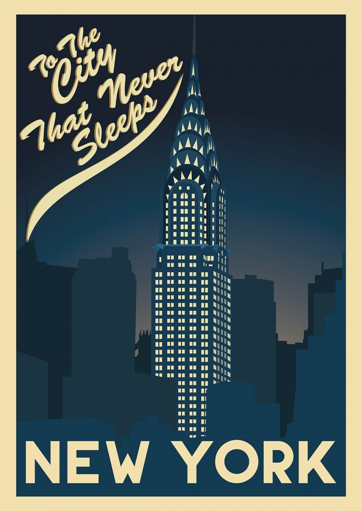

Lab 6 Synopsis
In Lab 6, I designed a custom Mapbox basemap inspired by a cultural/art reference and then built an interactive web map using Python. I created a CSV dataset of personally meaningful locations in New York City, geocoded addresses using the Mapbox API, and generated an interactive Python Folium map with categorized markers and image popups. This page includes the embedded final map, download links to my dataset and code, and a reflection on design and technical challenges.
Interactive Map
Explore the interactive map below to see a curated collection of my favorite places in New York City. Each location is symbolized by category, including restaurants, parks, cultural sites, and local businesses, and layered over my custom Art Deco–inspired Mapbox basemap.
The darker basemap and gold-accented road network are designed to emphasize structure and hierarchy, while keeping the focus on the markers themselves. Click on any marker to view the location’s name, a personal description of why it matters to me, and an image that captures the space. Use the zoom and pan tools to explore neighborhoods more closely.
Reflection
Design Inspiration
For this lab, I designed my basemap using an Art Deco style inspired by New York City’s iconic architecture. I chose Art Deco because it feels deeply connected to the visual identity of NYC, especially in buildings like the Chrysler Building, Rockefeller Center, and the Empire State Building. I’ve always liked this style for its bold geometry and rich, metallic color palettes. For my map, I decided to reinterpret Art Deco in a darker, more minimalist way. I used deep charcoal tones for land and water and muted gold accents for roads so that labels and icons would stand out clearly. Going darker allowed the text and symbols to feel more prominent without the map becoming too bright or distracting.

Although the assignment suggested creating a hometown map, I chose to map my favorite places in New York City instead. Since my hometown is in Vietnam, it would have been more complicated to geocode addresses and work through potential language formatting issues. NYC is also a city I feel personally connected to and imagine living in long term, so mapping meaningful places there felt more authentic and motivating.
Cartographic Challenges
One of the biggest cartographic challenges was deciding how to use color intentionally across different layers. Since I chose a darker Art Deco style, I needed enough contrast for readability without making the map feel too bright or overwhelming. Selecting which color belonged to which layer took more trial and error than I expected. Roads needed to stand out clearly against land, but not overpower the labels. Water needed to separate space without becoming distracting. Even small changes in tone dramatically shifted the mood of the map. I had to constantly zoom in and out to see whether the hierarchy still made sense and whether the balance between subtle and bold was working.
Another major challenge was managing density and visual clutter. New York City has many places that are geographically close together, especially in Manhattan. When I first added my markers, they quickly felt crowded and chaotic. I had to adjust marker size, simplify icons, and carefully decide which categories to display to prevent overcrowding. Designing across multiple zoom levels was also important. At closer zoom levels, I wanted neighborhood streets and labels to feel detailed and clear. But when zoomed out, too many labels made the map difficult to read. Learning how to hide or reduce features at different scales helped me understand that cartography is not just about adding information but also about controlling it.
Technical Challenges
On the technical side, integrating my custom Mapbox basemap into Python was more complex than I initially expected. Formatting the tile URL correctly and ensuring my access token worked properly required debugging. If even one part of the URL structure was slightly incorrect, the map would default to a standard basemap. Geocoding addresses through the Mapbox API also required careful handling. Some addresses did not immediately return coordinates, which meant I had to check formatting and confirm they were being encoded correctly. Testing with a few locations first helped me identify issues before running the full dataset.
Another technical challenge was making the map interactive and user-friendly. Since I have not used Python extensively for web mapping, I relied on Claude Opus 4.5 inside VS Code to help structure my code. However, I prepared my CSV file carefully beforehand and provided detailed instructions to the AI about what the map needed to include such as marker categories, pop-ups with images, and a legend. After generating the initial version, I reviewed the output visually and asked for refinements, such as adding a legend and improving pop-up formatting. AI made the coding process more efficient, but I still had to test the output, interpret errors, and make design decisions myself to ensure the final map aligned with my vision.
Conclusion
This lab helped me connect aesthetic design choices with technical implementation, and it pushed me to think about how visual storytelling and code can work together. More than just completing a technical task, this assignment gave me a creative way to share something personal. By mapping my favorite places in New York City, I wasn’t just plotting coordinates; I was telling a story about spaces that matter to me. The restaurants, parks, museums, and small local businesses on my map represent moments, memories, and parts of my life in this city. Designing the basemap in an Art Deco style made the project feel even more connected to the city itself, since that style reflects New York’s architectural identity. It allowed me to combine design, data, and personal narrative into one interactive experience. This assignment felt like building something meaningful that I would actually want to show others. It also made me realize how maps can function not just as tools for navigation, but as creative platforms for storytelling and identity.